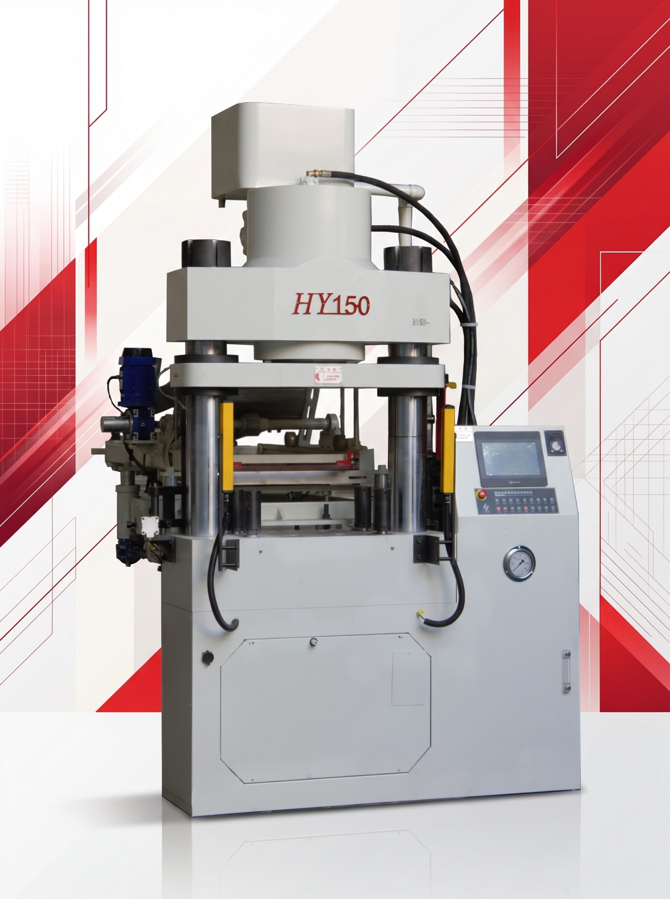
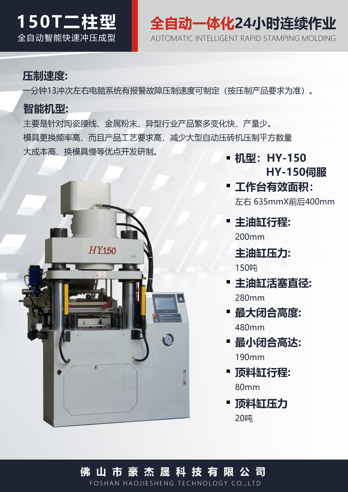
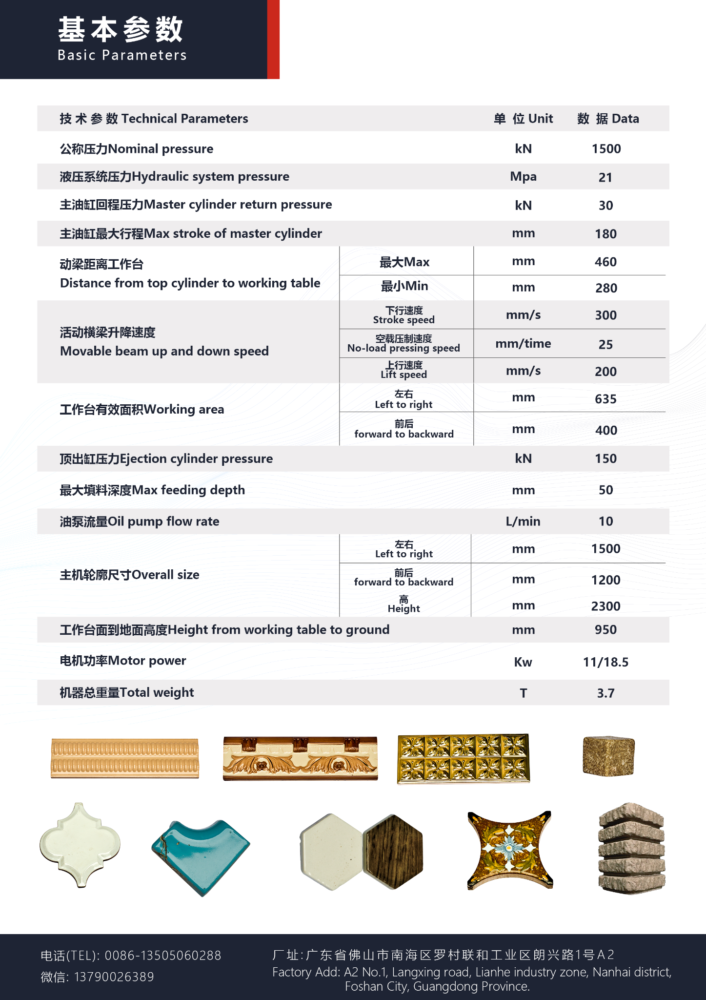

Automatic intelligent rapid forming for 3D, special-shaped and changing-product applications.
A flexible 150T hydraulic powder press for 3D ceramic parts, special-shaped products and uneven surfaces. It also supports flat products and smaller-batch production with flexible tooling; application examples include alumina ceramic armor plates.
Discuss Your Product →Explore the product overview and technical specifications below to learn more about the HY-150 and its capabilities.


Suitable for 3D ceramic parts, special-shaped products, textured or uneven surfaces, alumina ceramic armor plates and powder-metal parts. Flat products can also be formed for flexible small-batch production.